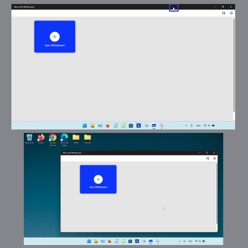

How to Customize the Microsoft Whiteboard App (Windows 11)
This tutorial covers:
How to Minimize Whiteboard:
How to Maximize Whiteboard:
How to Restore Whiteboard:
How to Resize Whiteboard:
How to Move Whiteboard:
No time to scroll down? Click through these tutorial slides:
See a tutorial video:
How to Minimize Whiteboard With Click
- Step 1: First open Microsoft Whiteboard. In the upper right click the “Minimize” or “-” button.
How to Minimize Whiteboard With Menu
- Step 1: Open Microsoft whiteboard. Go down to the taskbar and hover the mouse over the Microsoft Whiteboard app icon.
- Step 2: Right click the small window that appears.
- Step 3: In the menu that opens, click “Minimize”.
How to Minimize Whiteboard With Keyboard
- Step 1: First open Microsoft Whiteboard, and on the keyboard press the Tab key.
- Step 2: Press the Alt key, then press the Enter key.

- Step 3: In the menu that opens, press the down arrow key and on the “Minimze” option press Enter.

How to Maximize Whiteboard With Click
- Step 1: Open Microsoft Whiteboard. In the upper right click the “Maximize” button.
How to Maximize Whiteboard With Double Click
- Step 1: First open Microsoft Whiteboard. Double click the top of the window.
How to Maximize Whiteboard With Menu
- Step 1: Open Microsoft Whiteboard. Go down to the taskbar and hover the mouse over the Whiteboard app icon.
- Step 2: Right click the small window that appears.
- Step 3: In the menu that opens, click “Maximize”.

How to Maximize Whiteboard With Keyboard
- Step 1: First open a whiteboard, and on the keyboard press the Tab key.
- Step 2: Press the Alt key, then press the Enter key.
- Step 3: In the menu that opens, press the down arrow key and on the “Maximize” option press Enter.
How to Restore Whiteboard With Click
- Step 1: Maximize the Microsoft Whiteboard window. In the upper right click the “Maximize” button.
How to Restore Whiteboard With Double Click
- Step 1: First maximize the Microsoft Whiteboard window. Double click the top of the window. 
How to Restore Whiteboard With Menu
- Step 1: Maximize the Microsoft Whiteboard window. Go down to the taskbar and hover the mouse over the Whiteboard app icon.

- Step 2: Right click the small window that appears.
- Step 3: In the menu that opens, click “Restore”.

How to Restore Whiteboard With Keyboard
- Step 1: First maximize the Microsoft Whiteboard window. On the keyboard press the Tab key.
- Step 2: Press Alt, then press Enter.

- Step 3: In the menu that opens, press the Enter key on the “Restore” option.

How to Resize Whiteboard With Mouse
- Step 1: Open the Microsoft Whiteboard window. Hover the mouse over any edge or corner of the window, until the cursor becomes a double sided arrow.
- Step 2: Click, hold, and drag to resize the window. Release the mouse to stop resizing the window.

How to Resize Whiteboard With Menu
- Step 1: First open the Microsoft Whiteboard window. Go down to the taskbar and hover the mouse over the Microsoft Whiteboard app icon.
- Step 2: Right click the small window that appears.
- Step 3: In the menu that opens, click “Size”.

- Step 4: At the top of the Whiteboard window, click, hold, and drag the four arrows cursor to resize the window. Release the mouse to stop resizing the window.

How to Resize Whiteboard With Keyboard
- Step 1: Open a whiteboard, and on the keyboard press the Tab key.
- Step 2: Press the Alt key, then press the Enter key.
- Step 3: In the menu that opens, click “Size”.
- Step 4: At the top of the Whiteboard window, click, hold, and drag the four arrows cursor to resize the window. Release the mouse to stop resizing the window.
How to Move Whiteboard With Mouse
- Step 1: First open the Microsoft Whiteboard window. Click, hold, and drag the top of the window to move it. Release the mouse to stop moving the window.

How to Move Whiteboard With Menu
- Step 1: Open the Microsoft Whiteboard window. Go down to the taskbar and hover the mouse over the Microsoft Whiteboard app icon.
- Step 2: Right click the small window that appears.
- Step 3: In the menu that opens, click “Move”.
- Step 4: At the top of the window, click, hold, and drag the mouse to move the window. Release the mouse to stop moving the window.
How to Move Whiteboard With Keyboard
- Step 1: First open the Microsoft Whiteboard window. On the keyboard press the Tab key.
- Step 2: Press the Alt key, then press the Enter key.
- Step 3: In the menu that opens, press the down arrow key and on the “Move” option press Enter.
- Step 4: At the top of the window, click, hold, and drag the mouse to move the window. Release the mouse to stop moving the window.
Save these instructions for later with this free PDF tutorial.